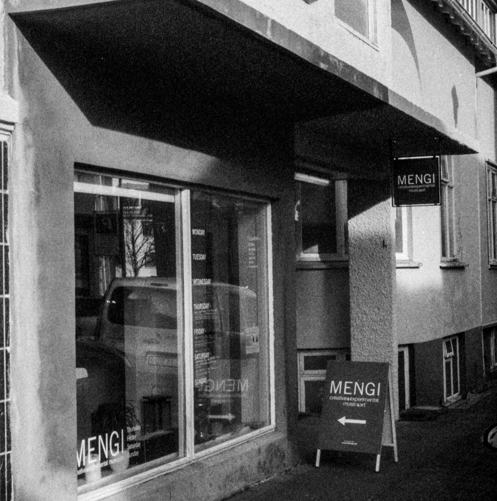

ABOUT

Mengi is Reykjavík's longest-running independent concert venue - since 2013. There are three to four concerts per week all year round - or at least 150 events per year, spanning the entire spectrum of musical styles. The number of events since the beginning has exceeded two thousand. These events are organized and staffed by artists and volunteers on a limited budget. Besides concerts, we host workshops as well as collaborations with the poetry and literary communities to host monthly readings. We also allow artists to use our space for rehearsals and meetings mostly for free. Mengi has received many awards, including the award of Tónskáladafélag Norðurlanda for tireless work in the interest of new music. Mengi seats 60 people, creating a unique intimacy with the artists and an atmosphere characterized by innovation and active conversation between generations. All events are recorded for our archive and for the artist's own use. The artists are diverse, from young people who are taking their first steps in front of an audience to world-famous artists who like to take the opportunity to step out of their comfort zone and try something new. Mengi has been a very important platform for new music projects that are now enjoying success both here at home and especially abroad.